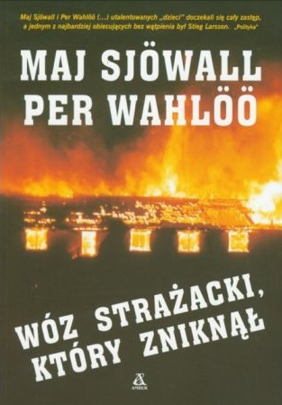
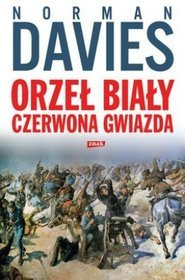
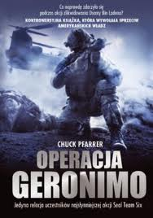

<!-- Poziom nagłówka tabeli -->
<div id="dominik" class="nondisplay">
<div id="lovely-things-list-dom">

<div class="row">
	<div class="span7 offset5"><p id="ostatnie">Ostatnie książki przeczytane przez <span class="imie">Dominika</span>:</p> 
		<input type="search" class="search" placeholder="szukaj" /> 
		<ul class="filter">
      	<a href="#" rel='tooltip' title='Wyświetl wszystkie książki'><li class="btn" id="filter-none-3"><i class="icon-th-list"></i></li></a>
        <a href="#" rel='tooltip' title='Wyświetl tylko polecane książki'><li class="btn" id="filter-beverages-3"><i class="icon-heart"></i></li></a>
    </ul>
  </div>
</div>

<!-- Poziom tabeli i sylwetki -->
<div class="row"> 
	<div class="span5" id="containtersylwetka">
		<h1>Dominik</h1>
		<p class="wzrost">185 cm</p>
		<aside class="sylwetkainfo">nasz autor<br>i miłośnik kryminałów</aside>
		<div class="progress progress-info progress-striped active">
			<div class="bar" style="width: 4%;"></div>

		</div>
		<p><span class="label label-info">4%</span> przeczytane</p>
		<p>czyli ok. <span class="label label-info">964 strony</span></p>
		<p>książki utworzyłyby wieżę <br>o wysokości <span class="label label-info">8 cm</span></p>
		<div id="cosadzisz">
				<a data-toggle="modal" href="#skomentuj"><div class="alert alert-info">
				<h4 class="alert-heading">Co sądzisz o naszym wyzwaniu?</h4>
				Dopisz się i zobacz, co napisali inni. &raquo;
			</div></a>
		</div>


	</div>


	<div class="span7" id="lista">

        <ul class="list unstyled">
          <li>
					
					<p class="author">Maj Sjöwall, Per Wahlöö</p>
					<p class="name"><a href="#" title="Wóz strażacki, który zniknął" rel="tooltip" class="niewidaclinku">Wóz strażacki, który...</a></p>
					<h6><span class="category">252 stron</span> &#8226; <span class="height">1.7 cm grubości</span></h6>
					<p class="recommend"></p>
					<p class="desc">
					<span class="readwhen label label-success">Kryminał</span>
					<span class="description"> Mężczyzna, który popełnił samobójstwo zna komisarza Becka. Dom innego Mężczyzny, który popełnił samobójstwo, spłonął. Czy to Samobójstwa, które mają z sobą coś wspólnego? Śledztwo, które jest skomplikowane prowadzi Martin Beck &#8211; komisarz, który jest pierwszym znanym szwedzkim policjantem. Oto książka, którą napisali Rodzice skandynawskich kryminałów &#8211; Autorzy, którzy stworzyli rozbudowane tytuły.</span>
					</p>
					</li>


					<li>
					
					<p class="author">Norman Davis</p>
					<p class="name"><a href="#" title="Orzeł Biały, Czerwona Gwiazda" rel="tooltip" class="niewidaclinku">Orzeł Biały...</a></p>
					<h6><span class="category">360 stron</span> &#8226; <span class="height">3,5 cm grubości</span></h6>
					<p class="recommend"></p>
					<p class="desc">
					<span class="readwhen label label-success">Historia</span>
					<span class="description">Polska historia oczami Anglika, czyli trzeźwe spojrzenie na wojnę polsko-bolszewicką bez wojny polsko-polskiej. Dobrze napisane, dobrze, że przeczytane. Taką historię warto znać.</span>
					</p>
					</li>


					<li>
					
					<p class="author">Chuck Pfarrer</p>
					<p class="name">Operacja Geronimo</p>
					<h6><span class="category">352 stron</span> &#8226; <span class="height">2,8 cm grubości</span></h6>
					<p class="recommend"></p>
					<p class="desc">
					<span class="readwhen label label-success">Militaria</span>
					<span class="description">Krótka historia amerykańskich oddziałów specjalnych oraz wojny z terroryzmem, napisana w najlepszym marketingowo momencie.</span>
					</p>
					</li>

        </ul>
			</div>
    </div>		
</div>
</div>